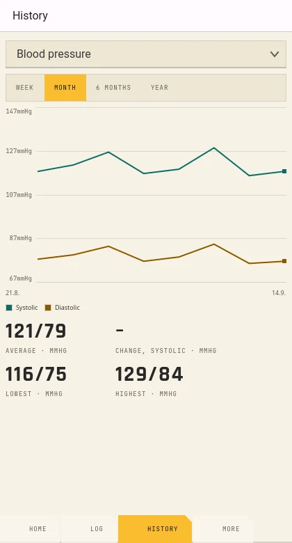
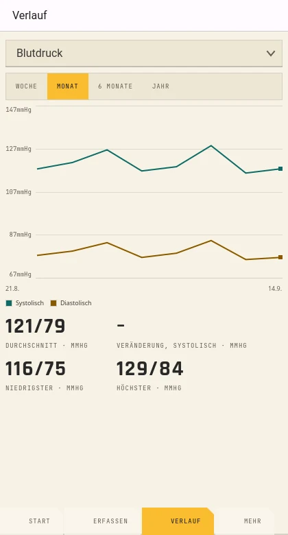
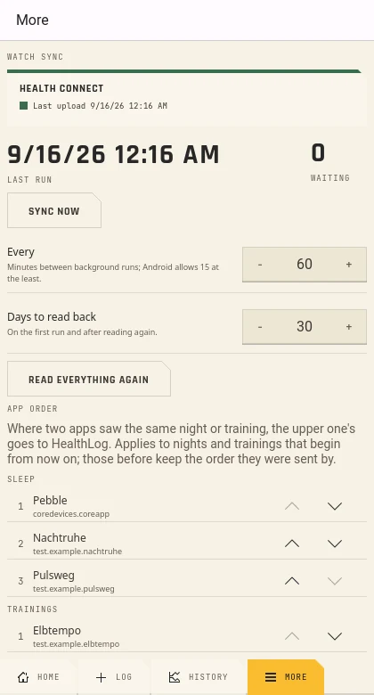
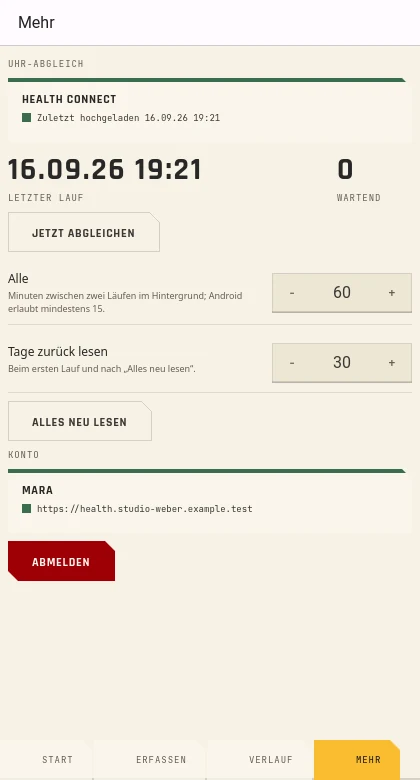

From the watch to your server
Von der Uhr auf deinen Server
Steps as daily totals, heart rate in 10-minute blocks and sleep with its stages. From Health Connect only what the Pebble app wrote, so nothing counts twice; it writes no distance or resting heart rate.
Schritte als Tagessummen, Herzfrequenz in 10-Minuten-Blöcken und Schlaf mit seinen Phasen. Aus Health Connect nur, was die Pebble-App geschrieben hat, damit nichts doppelt zählt; Strecke und Ruhepuls schreibt sie nicht.
Nothing gets lost
Nichts geht verloren
Runs every 60 minutes (from 15 on), reads 30 days back on the first run and then only what changed. Offline, a queue keeps what could not be sent and sends it later, in order and without duplicates.
Läuft alle 60 Minuten (ab 15 möglich), liest beim ersten Lauf 30 Tage zurück und danach nur, was sich geändert hat. Offline hält eine Warteschlange, was nicht gesendet werden konnte, und schickt es später, der Reihe nach und ohne Duplikate.
Like the iOS app
Wie die iOS-App
Password with a second factor or single sign-on in the browser. Kladde keeps only a renewable sign-in, encrypted with a key in the Android Keystore.
Passwort mit zweitem Faktor oder Single Sign-on im Browser. Kladde behält nur eine erneuerbare Anmeldung, verschlüsselt mit einem Schlüssel im Android Keystore.
Your values on the phone
Deine Werte auf dem Telefon
Home shows the latest value of each metric and its last seven days. History goes from a week to a year, with scale, legend and figures. Log takes weight, blood pressure, pulse, body fat and mood.
Start zeigt den neuesten Wert jeder Messgröße und ihre letzten sieben Tage. Der Verlauf reicht von einer Woche bis zu einem Jahr, mit Skala, Legende und Kennzahlen. Erfassen nimmt Gewicht, Blutdruck, Puls, Körperfett und Stimmung auf.


You see when it stalls
Du siehst, wenn es hängt
Last run, entries waiting, errors, and a warning when the watch has sent a kind of data for two days no more. "Sync now" and "Read everything again" by hand.
Letzter Lauf, wartende Einträge, Fehler und eine Warnung, wenn die Uhr eine Art Daten seit zwei Tagen nicht mehr geschickt hat. „Jetzt abgleichen“ und „Alles neu lesen“ von Hand.


How it works
So funktioniert es
Prerequisites
Voraussetzungen
- An Android phone with Android 14 or newer (Health Connect is part of the system) and a 64-bit ARM processor
- The Pebble app, writing to Health Connect
- Your own HealthLog instance, version 1.46 or newer
- Ein Android-Telefon mit Android 14 oder neuer (Health Connect gehört zum System) und 64-Bit-ARM-Prozessor
- Die Pebble-App, die nach Health Connect schreibt
- Deine eigene HealthLog-Instanz, Version 1.46 oder neuer
Your values show up in HealthLog with the source "Apple Health": HealthLog does not know Health Connect as a source yet. Plasma Mobile and reading the watch directly come later.
Deine Werte erscheinen in HealthLog mit der Quelle „Apple Health“: HealthLog kennt Health Connect noch nicht als Quelle. Plasma Mobile und das direkte Lesen der Uhr kommen später.
Changes
Änderungen
What each release brought, newest first. Every release adds an entry here and the same notes on the release page.
Was jede Version gebracht hat, die neueste zuerst. Jede Version bekommt hier einen Eintrag und dieselben Notizen auf der Release-Seite.
-
0.1.0
The first release: Kladde brings what your Pebble writes to Health Connect into your own HealthLog, in the background, and shows your values on the phone.Das erste Release: Kladde bringt, was deine Pebble nach Health Connect schreibt, im Hintergrund in dein eigenes HealthLog und zeigt deine Werte auf dem Telefon.
NewNeu
- Sign in to your HealthLog instance like the iOS app: the server is checked first, then password with a second factor (TOTP or recovery code) or single sign-on in the browser.Anmelden an deiner HealthLog-Instanz wie mit der iOS-App: erst wird der Server geprüft, dann Passwort mit zweitem Faktor (TOTP oder Wiederherstellungscode) oder Single Sign-on im Browser.
- Watch sync from Health Connect: steps as daily totals, distance, heart rate in 10-minute blocks, resting heart rate and sleep with its stages, only from the Pebble app, so nothing counts twice.Abgleich der Uhr aus Health Connect: Schritte als Tagessummen, Strecke, Herzfrequenz in 10-Minuten-Blöcken, Ruhepuls und Schlaf mit seinen Phasen, nur aus der Pebble-App, damit nichts doppelt zählt.
- Runs in the background (every 60 minutes, from 15 on), reads 30 days back on the first run and then only what changed; "Sync now" and "Read everything again" by hand.Läuft im Hintergrund (alle 60 Minuten, ab 15 möglich), liest beim ersten Lauf 30 Tage zurück und danach nur, was sich geändert hat; „Jetzt abgleichen“ und „Alles neu lesen“ von Hand.
- Nothing gets lost offline: what could not be sent waits in a queue and goes out later, in order and without duplicates.Offline geht nichts verloren: was nicht gesendet werden konnte, wartet in einer Warteschlange und geht später raus, der Reihe nach und ohne Duplikate.
- Status: last run, entries waiting, errors, and a warning when the watch has sent a kind of data for two days no more.Status: letzter Lauf, wartende Einträge, Fehler und eine Warnung, wenn die Uhr eine Art Daten seit zwei Tagen nicht mehr geschickt hat.
- Home with the latest value of each metric and its last seven days, History from a week to a year with scale and figures, Log for weight, blood pressure, pulse, body fat and mood.Start mit dem neuesten Wert jeder Messgröße und ihren letzten sieben Tagen, Verlauf von einer Woche bis zu einem Jahr mit Skala und Kennzahlen, Erfassen für Gewicht, Blutdruck, Puls, Körperfett und Stimmung.
- German and English.Deutsch und Englisch.
All changes →Alle Änderungen →NoteHinweis
- Needs Android 14 or newer (Health Connect is part of the system) on a 64-bit ARM phone, and HealthLog 1.46 or newer.Braucht Android 14 oder neuer (Health Connect gehört zum System) auf einem Telefon mit 64-Bit-ARM und HealthLog 1.46 oder neuer.
- Your values show up in HealthLog with the source "Apple Health": HealthLog does not know Health Connect as a source yet.Deine Werte erscheinen in HealthLog mit der Quelle „Apple Health“: HealthLog kennt Health Connect noch nicht als Quelle.
- Kladde keeps only a renewable sign-in, encrypted with a key in the Android Keystore; the background sync uses the same sign-in, no extra token.Kladde behält nur eine erneuerbare Anmeldung, verschlüsselt mit einem Schlüssel im Android Keystore; der Abgleich im Hintergrund nutzt dieselbe Anmeldung, kein zusätzliches Token.
- Plasma Mobile and reading the watch directly come later.Plasma Mobile und das direkte Lesen der Uhr kommen später.